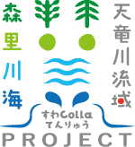

トップ
イベントについて
当日のご案内
お申込み
当日のご案内
イベント当日のスケジュール、集合場所、送迎、駐車場、各プログラムの詳細をご確認いただけます。
当日のご案内をすべて見る（PDF）
↗
ページ別のご案内
01
10月17日・18日の全体スケジュール
2日間の総合案内 MAP
↗
02
10月17日（土）｜駅からの会場までの送迎
JR上諏訪駅から会場までの送迎
↗
03
10月17日（土）｜参加者共通
受付・開会式
↗
04
10月17日（土）｜共通プログラム
伐倒体験
↗
05
10月17日（土）｜会場案内
伐倒体験｜会場・グループ行動案内
↗
06
10月17日（土）｜駐車場・送迎
いずみ湖からホテルまでのご案内
↗
07
10月17日（土）｜参加者共通
夕食・懇談会
↗
08
10月18日（日）｜選択プログラム
B-1・B-2 参加者の行程
↗
09
10月18日（日）｜選択 B-1 詳細
B-1 カヤック体験／ヒシ刈り
↗
10
10月18日（日）｜B-1 行程図
B-1 会場・移動案内
↗
11
10月18日（日）｜選択 B-2 詳細
B-2 諏訪湖遊覧視察／釜口水門バスツアー
↗
12
10月18日（日）｜B-2 行程図
B-2 会場・移動案内
↗
13
10月18日（日）｜C-1 詳細
C-1 脱炭素カードゲーム
↗
14
10月18日（日）｜C-1 行程図
C-1 会場・移動案内
↗
15
10月18日（日）｜C-2 詳細
C-2 Water Scope フォーラム
↗
16
10月18日（日）｜C-2 行程図
C-2 会場・移動案内
↗
17
10月18日（日）｜共通スケジュール
閉会式・散会後の送迎
↗
18
10月17日・18日｜駐車できる区域をご確認ください
駐車場案内
↗
イベントについて
当日のご案内
応募申込みは
こちら